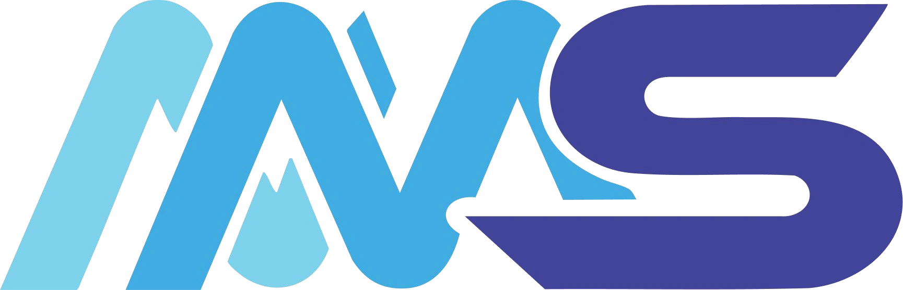
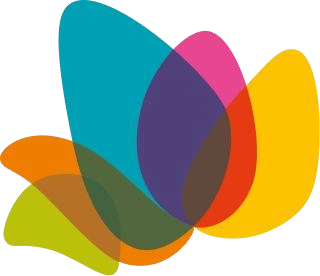
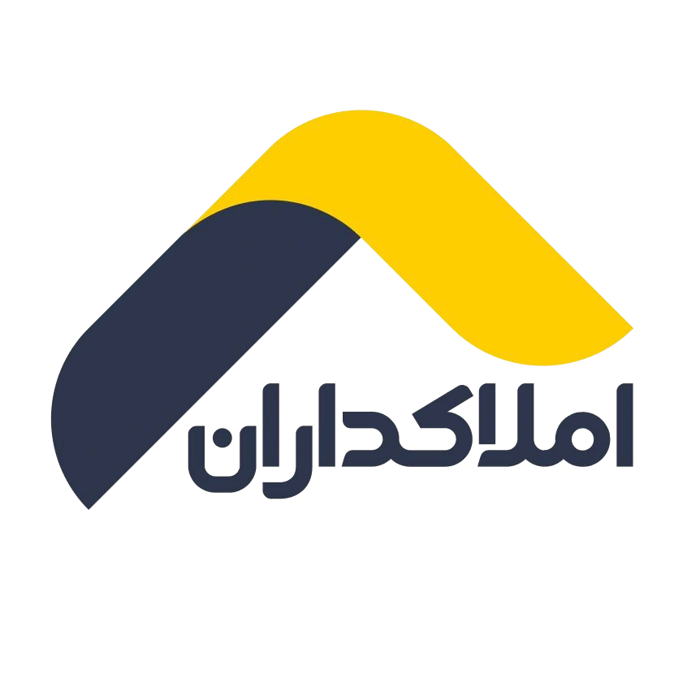
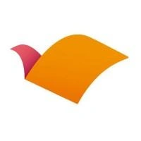

with 3+ years of experience across enterprise software, AI-assisted products, and scalable UX patterns. I connect user needs, business goals, and technical constraints to shape better product experiences.
A closer look at how I think, design, and solve product problems.
Enterprise UXUser ResearchWorkflow Redesign
Map Preparation Workflow
What appeared to be a complex interface was actually a fragmented workflow. Through stakeholder interviews, field observations, and process analysis, I uncovered gaps between the system and real operations and redesigned the experience around users’ actual workflows.
Designed interconnected workflows for a property management system, covering registration, valuation, ownership records, and documents. The work involved requirements analysis and interaction design, with a focus on making complex property operations more structured and manageable.
Focused on AI Experience Design (AX) for Ravin, an AI-powered support and training assistant for complex enterprise software. My work involved shaping human–AI interactions, defining assistant behavior, and designing conversational flows, with an emphasis on transparency, trust, error handling, and user control.
Moved beyond reusable UI components to address recurring interaction challenges in enterprise products. Created a task-based UX pattern library with clear categories, usage rules, and decision guidance to support more consistent design and faster decision-making.
Designed Rahro, a reading companion that brings book organization, progress tracking, and reading habits into one experience. The goal was to help readers stay engaged with their books and make their reading journey easier to manage.
Over the past three years, I’ve worked across consumer products, enterprise software, EdTech, and AI-assisted experiences. Along the way, my focus has evolved from interface design toward problem discovery, systems thinking, and product decision-making.

Product Designer
Nosaz Mohaseb
May 2025 – Present
Designing complex enterprise and municipal software, with a focus on product discovery, workflow analysis, scalable UX patterns, and AI experience design. Collaborating with cross-functional teams to turn operational and technical challenges into usable product experiences.
UI/UX Designer
DanaJuo
Apr 2025 · Oct 2025 – Feb 2026
Designed multi-role EdTech experiences for students, educators, and experts, focusing on course creation, content publishing, registration, and educational interactions.

UI/UX Designer
OPAL Shopping Center
Nov 2024 – Jul 2025
Redesigned the shopping center’s digital experience, improving information architecture, service discovery, and user journeys while building a reusable UI library and supporting the product through launch.

UI/UX Designer
Amlakdaran
Aug 2024 – Mar 2025
Joined an early-stage property and building-services startup as its first designer. Helped establish its design foundations through user research, stakeholder collaboration, role-based experiences, and reusable UI components.

Product Design Intern
Rahnema College
Oct 2024 – Dec 2024
Developed a more structured approach to product design through hands-on experience, connecting design methodologies with practical product challenges.
UI/UX Designer
Freelance
Jun 2023 – Jul 2024
Built my design foundations by working independently across different industries, developing skills in user-centered design, interaction design, and visual communication.
What I’m Passionate About
I’m drawn to complex challenges and the opportunity to make things work better. My interest goes beyond crafting interfaces it’s about understanding systems, rethinking processes, exploring business needs, and creating meaningful product impact.
Complex Products & Simplification
Turning complexity into clear, usable, and efficient experiences.
Process & Workflow Design
Analyzing, designing, and improving end-to-end processes across people, systems, and technology.
Business Analysis & Product Impact
Understanding business needs, identifying opportunities, and contributing to product decisions.
AI Experience Design (AX)
Designing human–AI experiences that are useful, trustworthy, and truly help people get things done.
Human Impact & Growth
Building meaningful products that help people learn, grow, and improve their well-being, especially in EdTech and HealthTech.
Contact
Have a product problem worth exploring?
I’m always open to thoughtful conversations about product design, new opportunities, and interesting problems.
 Hi, my name is Mohadese and I am a
Hi, my name is Mohadese and I am a